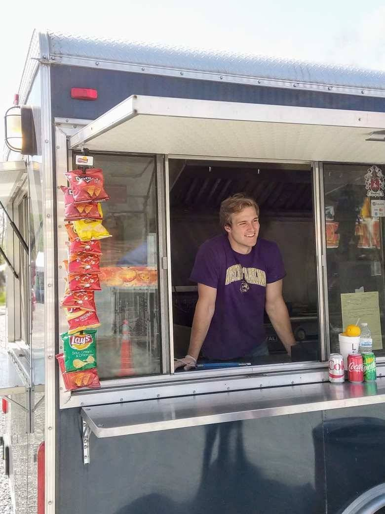

For foodies
Download the app to follow trucks and check profiles as owners claim and update them.
Food Truck Preview
Grubbers is listed as a seeded Food Truck Finder profile for Leesburg, Virginia. This profile is awaiting owner claim and is not marked live, verified, or officially managed yet.

Profile Status
Food Truck Finder is building public profile previews so owners can see their truck, claim it, and keep customer-facing details accurate. Until claimed, this page should not be treated as live location, verified ownership, or an official partnership.
Download the app to follow trucks and check profiles as owners claim and update them.
Claim this truck to add schedule, menu, photos, website, social links, and contact details.
Share this page with the truck owner instead of sending a generic claim link.
Website, Instagram, Facebook, business email, or photo proof can speed up manual review.